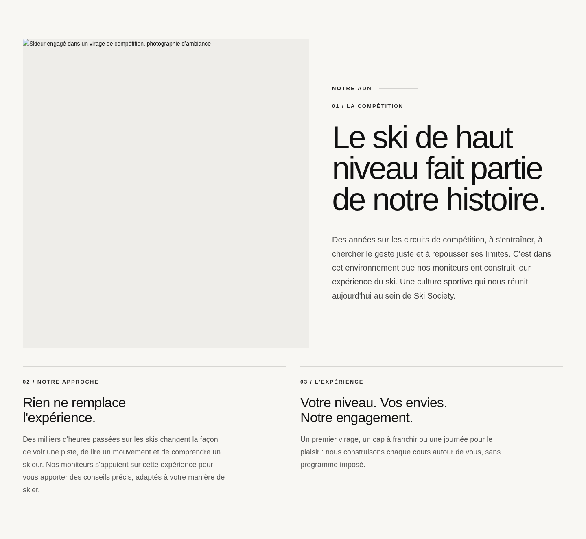
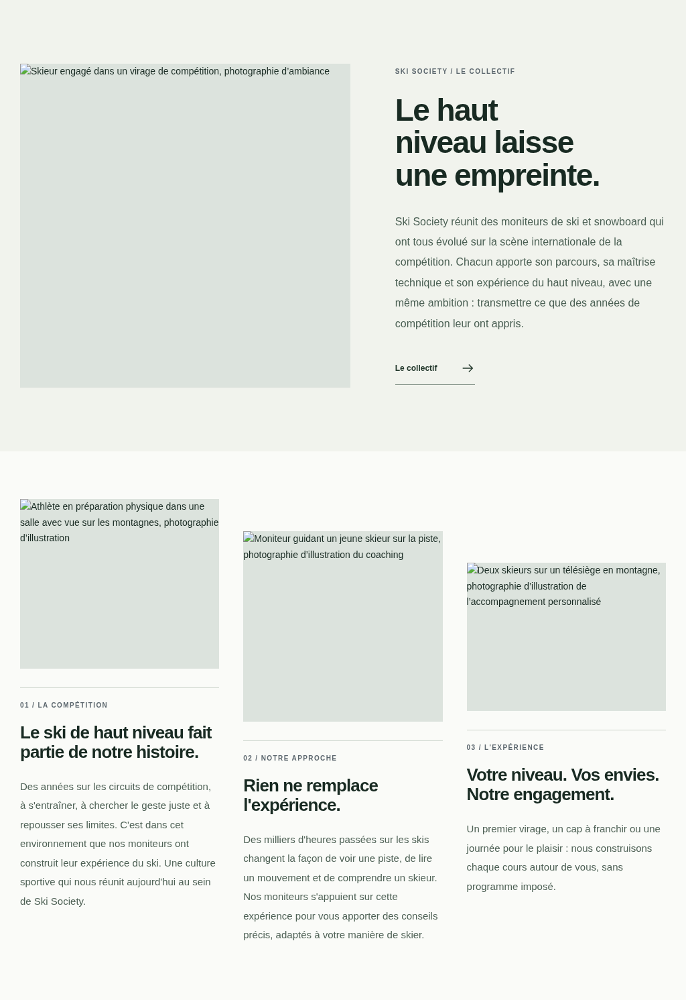
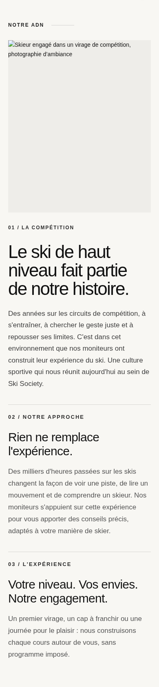

ADN — composition alpine éditoriale
Comparaison avec la version précédente, commit 33fb77c. Seule la zone ADN de l’accueil est modifiée.
Photos et polices distantes bloquées : le proxy refuse les requêtes Pexels, Google Fonts et Fontshare. Ces captures permettent de vérifier la composition et les textes avec les ressources manquantes ; elles ne valident pas le rendu photographique et typographique complet. Les photos ne sont ni remplacées ni simulées.
Desktop — 1440 px



Tablette — 1024 px



Mobile — 390 px


